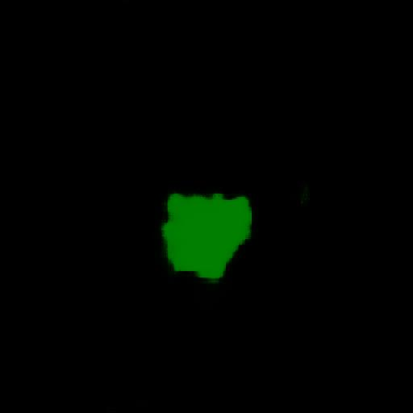
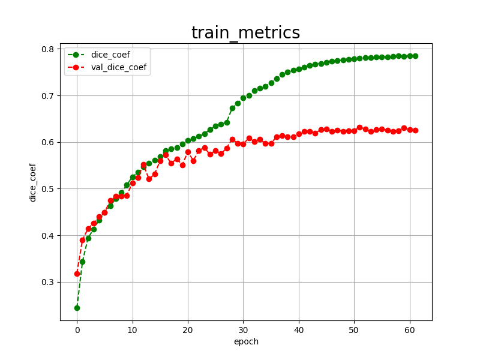
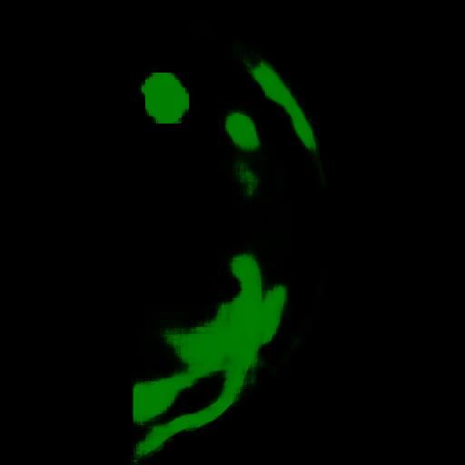

Tensorflow-Image-Segmentation-CDD-CESM-Mammogram (Updated: 2025/05/08)
This is the second experiment of Image Segmentation for CDD-CESM-Mammogram
based on
the latest Tensorflow-Image-Segmentation-API, and
Mammogram-ImageMask-Dataset-V2.zip, which was derived by us from
Categorized Digital Database for Low energy and Subtracted Contrast Enhanced Spectral Mammography images (CDD-CESM)
Please see also our first experiment
Image-Segmentation-CDD-CESM-Mammogram
On our dataset, please refer to
Augmentation-CDD-CESM-Mammogram-Segmentation-Dataset
Actual Image Segmentation for Images of 512x512 pixels
As shown below, the inferred masks look similar to the ground truth masks.
| Input: image |
Mask (ground_truth) |
Prediction: inferred_mask |
|
|
|
|
|
|
|
|
 |
In this experiment, we used the simple UNet Model
TensorflowSlightlyFlexibleUNet for this Mammogram Segmentation Model.
As shown in Tensorflow-Image-Segmentation-API.
you may try other Tensorflow UNet Models:
TensorflowSwinUNet.py
TensorflowMultiResUNet.py
TensorflowAttentionUNet.py
TensorflowEfficientUNet.py
TensorflowUNet3Plus.py
TensorflowDeepLabV3Plus.py
1. Dataset Citation
The image dataset used here has been taken from the following web site.
Categorized Digital Database for Low energy and Subtracted Contrast Enhanced Spectral Mammography images (CDD-CESM)
Citations & Data Usage Policy
Users must abide by the TCIA Data Usage Policy and Restrictions. Attribution should include references
to the following citations:
Data Citation
Khaled R., Helal M., Alfarghaly O., Mokhtar O., Elkorany A., El Kassas H., Fahmy A. Categorized Digital Database
for Low energy and Subtracted Contrast Enhanced Spectral Mammography images [Dataset]. (2021) The Cancer Imaging
Archive. DOI: 10.7937/29kw-ae92
Publication Citation
Khaled, R., Helal, M., Alfarghaly, O., Mokhtar, O., Elkorany, A., El Kassas, H., & Fahmy, A. Categorized contrast
enhanced mammography dataset for diagnostic and artificial intelligence research. (2022) Scientific Data,
Volume 9, Issue 1. DOI: 10.1038/s41597-022-01238-0
TCIA Citation
Clark K, Vendt B, Smith K, Freymann J, Kirby J, Koppel P, Moore S, Phillips S, Maffitt D, Pringle M, Tarbox L,
Prior F. The Cancer Imaging Archive (TCIA): Maintaining and Operating a Public Information Repository,
Journal of Digital Imaging, Volume 26, Number 6, December, 2013, pp 1045-1057. DOI: 10.1007/s10278-013-9622-7
If you would like to train this MammogramSegmentation model by yourself,
please download the dataset from the google drive
Mammogram-ImageMask-Dataset-V2.zip
, expand the downloaded ImageMaskDataset and put it under ./dataset folder to be
./dataset
└─Mammogram
├─test
│ ├─images
│ └─masks
├─train
│ ├─images
│ └─masks
└─valid
├─images
└─masks
Mammogram Dataset Statistics
As shown above, the number of images of train and valid datasets is enough to use for a training set of our segmentation model.
Train_images_sample
Train_masks_sample
3 Train TensorflowUNet Model
We have trained MammogramTensorflowUNet Model by using the following
train_eval_infer.config file.
Please move to ./projects/TensorflowSlightlyFlexibleUNet/Mammogram and run the following bat file.
>1.train.bat
, which simply runs the following command.
>python ../../../src/TensorflowUNetTrainer.py ./train_eval_infer.config
Model parameters
Defined a small base_filters and large base_kernels for the first Conv Layer of Encoder Block of
TensorflowUNet.py
and a large num_layers (including a bridge between Encoder and Decoder Blocks).
[model]
base_filters = 16
base_kernels = (9,9)
num_layers = 8
dilation = (1,1)
Learning rate
Defined a small learning rate.
[model]
learning_rate = 0.0001
Online augmentation
Disabled our online augmentation.
[model]
model = "TensorflowUNet"
generator = False
Loss and metrics functions
Specified "bce_dice_loss" and "dice_coef".
[model]
loss = "bce_dice_loss"
metrics = ["dice_coef"]
Learning rate reducer callback
Enabled learing_rate_reducer callback, and a small reducer_patience.
[train]
learning_rate_reducer = True
reducer_factor = 0.4
reducer_patience = 4
Early stopping callback
Enabled early stopping callback with patience parameter.
[train]
patience = 10
Epoch change inference callbacks
Enabled epoch_change_infer callback.
[train]
epoch_change_infer = True
epoch_change_infer_dir = "./epoch_change_infer"
epoch_changeinfer = False
epoch_changeinfer_dir = "./epoch_changeinfer"
num_infer_images = 6
By using this callback, on every epoch_change, the inference procedure can be called
for an image in mini_test folder. This will help you confirm how the predicted mask changes
at each epoch during your training process.
Epoch_change_inference output at start (1,2,3)
Epoch_change_inference output at end (60,61,62)
In this experiment, the training process was stopped at epoch 62 by EarlyStopping Callback.
train_metrics.csv

train_losses.csv
4 Evaluation
Please move to a ./projects/TensorflowSlightlyFlexibleUNet/Mammogram folder,
and run the following bat file to evaluate TensorflowUNet model for Mammogram.
./2.evaluate.bat
This bat file simply runs the following command.
python ../../../src/TensorflowUNetEvaluator.py ./train_eval_infer_aug.config
Evaluation console output:
Image-Segmentation-CDD-CESM-Mammogram
evaluation.csv
The loss (bce_dice_loss) to this Mammogram/test was not so low, and dice_coef not so high as shown below.
loss,0.2716
dice_coef,0.6309
5 Inference
Please move to a ./projects/TensorflowSlightlyFlexibleUNet/Mammogram folder
,and run the following bat file to infer segmentation regions for images by the Trained-TensorflowUNet model for Mammogram.
./3.infer.bat
This simply runs the following command.
python ../../../src/TensorflowUNetInferencer.py ./train_eval_infer_aug.config
mini_test_images
mini_test_mask(ground_truth)
Inferred test masks
Enlarged images and masks
| Image |
Mask (ground_truth) |
Inferred-mask |
|
|
|
|
|
 |
|
|
|
|
|
|
|
|
 |
 |
|
|
References
1. Categorized Digital Database for Low energy and Subtracted Contrast Enhanced Spectral Mammography images (CDD-CESM)
https://wiki.cancerimagingarchive.net/pages/viewpage.action?pageId=109379611#109379611bcab02c187174a288dbcbf95d26179e8
2. Categorized contrast enhanced mammography dataset for diagnostic and artificial intelligence research
Rana Khaled, Maha Helal, Omar Alfarghaly, Omnia Mokhtar, Abeer Elkorany,
Hebatalla El Kassas & Aly Fahmy
https://www.nature.com/articles/s41597-022-01238-0
3. CDD-CESM-Dataset
https://github.com/omar-mohamed/CDD-CESM-Dataset
4. Breast Cancer Segmentation Methods: Current Status and Future Potentials
Epimack Michael, He Ma, Hong Li, Frank Kulwa, and Jing
https://www.ncbi.nlm.nih.gov/pmc/articles/PMC8321730/
5. Image-Segmentation-CDD-CESM-Mammogram
Toshiyuki Arai @antillia.com
https://github.com/sarah-antillia/Image-Segmentation-CDD-CESM-Mammogram